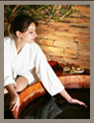

Fundada em 2004, a Shizen Day Spa lançou o conceito de Day Spa em Londrina
A Shizen nasceu pequena, bem pequena. Ocupando apenas 8 metros quadrados de um supermercado em Londrina, Paraná, a Shizen lançou uma proposta de negócio pouco conhecida na cidade. O seu crescimento se deve ao empreendedorismo baseado em um planejamento que forneceu credibilidade para as parcerias de 2004 até os dias de hoje.
Nossa Missão
"Proporcionar momentos de bem estar com qualidade, eficiência, dedicação e respeito ao ser humano e a natureza, contribuindo para a melhor qualidade de vida da comunidade".
Nossa Visão
"Ser uma rede de negócios economicamente atrativa, sendo reconhecida como uma empresa de qualidade, com grande foco no atendimento ao cliente e superando os objetivos de negócio estabelecidos."
Por que a Shizen?
Veja algumas características que fazem da Shizen Day Spa um local especial para você relaxar com tranquilidade! Tenha a certeza de que o seu bem estar e sua satisfação são sempre nossos maiores objetivos.
As unidades Shizen Day Spa atendem também fora do horário comercial para facilitar seu agendamento. Além disso, verifique a disponibilidade para atendimentos em horários especiais, como domingos ou feriados.
Todos os terapeutas são avaliados periodicamente e passam por reciclagem programada. Além disso, antes de iniciar os atendimentos, os terapeutas recebem um treinamento de pelo menos 28 dias, quando são avaliados por voluntários e pelos terapeutas veteranos.
Na Shizen Day Spa todos os terapeutas são instruídos a manter sua privacidade. Assim, nosso respeito a você é garantido, sendo que suas informações são mantidas em sigilo e o que se conversa durante o atendimento não é compartilhado com demais clientes e/ou terapeutas.
Em todos os atendimentos, o mesmo padrão de organização. Para sua higiene, após cada utilização todas as peças de enxoval utilizadas em nossas unidades são remetidas para lavanderias profissionais para higienização e limpeza. As banheiras são esvaziadas a cada atendimento, lavadas, e então enxaguadas com alcool 70%, conforme orientação da Vigilância Sanitária. Os chinelos e apoios para cabeça também são higienizados com álcool 70%, enquanto os materiais em tecido não tecido (TNT) são descartados a cada utilização.
Todas as unidade Shizen Day Spa oferecem ambientes climatizados para você relaxar tanto no verão quanto no inverno. Por favor, fique a vontade para solicitar a alteração de temperatura ao seu terapeuta.
Dificuldade para estacionar é um problema corriqueiro. As unidades Shizen Day Spa oferecem estacionamento em frente à unidade e/ou manobrista e/ou estacionamento terceirizado como cortesia a todos os clientes. Simples!
Todos os serviços Shizen Day Spa são realizados buscando o máximo de qualidade para você. Somos tradicionais e excelentes no que fazemos. Para a inclusão de serviços em nosso portfólio, você pode ter a certeza de que muitas análises foram realizadas.
Você pode utilizar seu vale presente e/ou seu Shizen Club em qualquer unidade Shizen Day Spa (verifique a diferença de valores antes da utilização), além de ter seu cadastro disponibilizado para todas as unidades. Você fica integrado com a rede e tem seus benefícios multiplicados!
Como funciona?
Nós oferecemos roupas de uso individual e você não fica desnudo durante as massagens.
Para relaxar ainda mais, é importante que você conheça como funciona o atendimento na Shizen Day Spa com o objetivo de você se sentir cada vez mais em casa! Veja as 10 dúvidas mais frequentes. Caso tenha outras dúvidas, escreva para relacionamento@shizendayspa.com.br ou entre em contato com nossa matriz!
Clique no link abaixo e descubra tudo para se sentir ainda mais a vontade na Shizen Day Spa e experimentar o relaxamento que você procura, com o conforto que você planejou!
Depende do serviço escolhido. Nós oferecemos shorts, bermudas e camisetas para os atendimentos de massagens. Veja alguns detalhes: Banhos de ofurô: solicitamos que traga sua roupa de banho. Gommage e banho de lua: sugerimos o uso de roupas de banho mais velhas pelo risco de manchas, ou então, utilize nossa calcinha descartável. Massagem clássica ou drenagem linfática: as mulheres são sempre atendidas por fisioterapeutas do gênero feminino e podem trazer a parte de cima do biquíni, sutiã ou desnuda, como preferir.
Sim. Em todas as unidades Shizen Day Spa você terá pelo menos uma das seguintes opções: levar seus pertences para a sala de atendimento ou colocá-los em um armário com chave no vestiário.
Sim, infelizmente. Nós respeitamos a pontualidade de início de todos os atendimentos, isto significa que o seu atendimento tem um horário de início e, também, um horário de término para que o próximo atendimento seja iniciado com pontualidade.
Em geral, as unidades aceitam Cartões de Crédito, Cartões de Débito ou Dinheiro como pagamento. Para atendimentos terceirizados, restrições podem ser aplicadas.
Sim. Porém, para respeitarmos atendimentos subsequentes e mesmo para disponibilizarmos este serviço, é necessário que sua solicitação seja feita no momento do agendamento.
Não. Os vale presentes sorteados são comercializados com condições específicas que incluem a data de validade, escolhida pela empresa compradora. Assim, a Shizen Day Spa não pode se comprometer com a extensão do prazo mencionado.